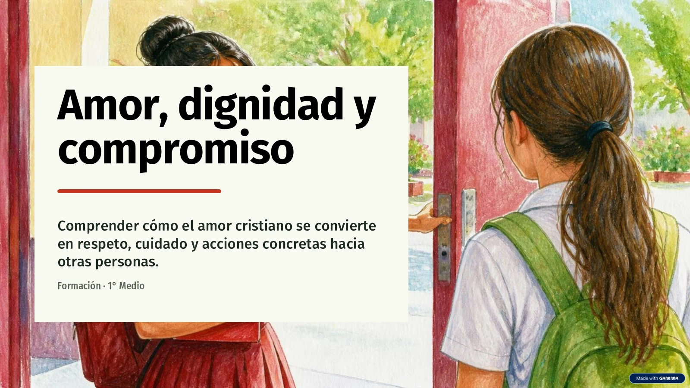

Formación · 1.º medio D
Amor, dignidad y compromiso
¿Cómo se transforma el respeto por las personas en una acción concreta?
Objetivo: comprender cómo el amor cristiano se convierte en respeto, cuidado y acciones concretas hacia otras personas.
- Lee las ocho diapositivas. Puedes ampliar las imágenes o abrir su texto.
- Escribe tu nombre completo y responde las siete preguntas. Pueden conversar en grupo; cada estudiante escribe su propia entrega aquí.
- Revisa tus respuestas y pulsa Entregar actividad. Espera el mensaje Entrega confirmada.
1. Lee y comprende

Leer el texto de esta diapositiva
Amor, dignidad y compromiso
Comprender cómo el amor cristiano se convierte en respeto, cuidado y acciones concretas hacia otras personas.
Formación · 1° Medio
El amor se reconoce en lo que hacemos
PARA COMENZAR
Partimos de situaciones cotidianas para identificar cómo recibimos y entregamos ayuda.
Pregunta 1
¿Cómo recibimos ayuda?
Pregunta 2
¿Cómo entregamos ayuda?
Distingue palabras de gestos concretos.
Jesús pone a la persona en el centro
UNA IDEA CENTRAL
El amor es una forma concreta de relacionarnos: toda persona posee una
dignidad
que merece
respeto
.
Dignidad
Cada persona importa.
Respeto
La persona merece un trato cuidadoso.
Amor
Se expresa al relacionarnos.
Vencer la indiferencia también es amar
Mirar al otro. Superar la indiferencia. Actuar en su favor.
El mensaje cristiano también nos conecta con la responsabilidad de preocuparnos por otras personas.
Actividad: leer una situación y responder
TRABAJO GRUPAL
En grupos, analicen una situación del curso, la familia o la comunidad.
Lean
Una situación del curso, la familia o la comunidad.
Propongan
Una actitud coherente con el amor al prójimo.
Concreten
Una acción realizable.
Escuchar también construye comunidad
PUESTA EN COMÚN
Compartimos las propuestas con respeto y descubrimos lo que tienen en común.
Escuchar
Compartir las propuestas con respeto.
Reconocer
Observar los valores que se repiten.
Conectar
Ver cómo distintas acciones expresan preocupación por los demás.
PARA LLEVARSE
Distintas acciones pueden expresar la misma preocupación por los demás.
Del ideal a un pequeño cambio
PARA REFLEXIONAR
Amor, prójimo y dignidad se relacionan cuando elegimos un cambio posible para comenzar hoy.
Reconocer
La dignidad de toda persona.
Relacionar
Amor y prójimo en la vida cotidiana.
Elegir
Un cambio posible para comenzar hoy.
Mi compromiso empieza esta semana
CIERRE
Redacta una frase de compromiso personal inspirada en la clase.
Mi frase
Esta semana, yo me comprometo a ____________________________.
El amor cristiano se expresa en acciones concretas.
Material de la presentación «Amor, dignidad y compromiso» entregada para esta clase.
2. Responde la actividad
Escribe con tus palabras y relaciona tus propuestas con lo leído. Para entregar debes responder las siete preguntas y elegir una situación. Usa ejemplos ficticios, sin nombres de otras personas.
Entrega confirmada
Tus respuestas quedaron registradas. El profesor revisará tu comprensión de la presentación y tus propuestas.
Volver al comienzo de la actividadPuedes recargar y continuar en esta pestaña. En un computador compartido, entrega tu trabajo antes de pulsar Otro estudiante.